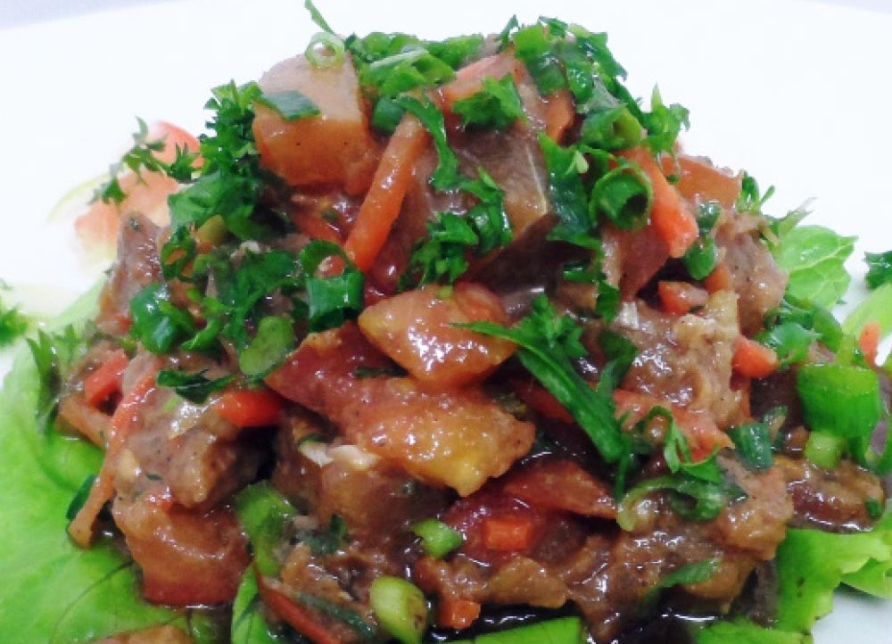

Salade de poisson
Les saveurs du pacifique

Ingrédients
- 500 g de poisson (thon, saumon, cabillaud)
- 100 g de moules cuites
- 2 carottes
- 1 mini concombre
- 2 gousses d’ail
- 8 petites tomates ou une grosse tomate
- 1 branche de céleri
- coriandre fraîche
- ciboulette
- gingembre frais râpé
- sauce soja
- le jus de 3 citrons verts
- sel et poivre
Préparation
- Découpez le poisson en petits cubes, salez et poivrez. Disposez- les dans un plat, ajoutez les moules. Réservez au frais.
- Taillez au couteau des bâtonnets de carotte, de céleri et de concombre. Lavez les tomates et coupez les en petits quarts (ou en petits morceaux si vous utilisez une grosse tomate).
- Préparez la sauce : Dans un bol mélangez la sauce soja, le jus de citron vert, ajoutez-y le gingembre râpé et l’ail haché.
- Sortez la préparation poisson-moules du réfrigérateur et arrosez-la de la sauce que vous avez préparée. Salez et poivrez selon votre convenance, saupoudrez de ciboulette et coriandre ciselées. Incorporez la julienne de légumes ainsi que les tomates. Servez bien frais... C’est prêt !